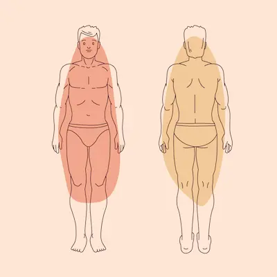

¿El IMC es suficiente? Descubre qué otros factores importan
Introducción: Las limitaciones del IMC
El Índice de Masa Corporal (IMC) es una herramienta ampliamente utilizada para evaluar el peso en relación con la altura, pero tiene importantes limitaciones. No distingue entre masa muscular y grasa, lo que puede llevar a clasificaciones engañosas en personas atléticas o con composiciones corporales atípicas. Además, ignora factores críticos como la distribución de la grasa, que es clave para determinar riesgos para la salud.
Por ejemplo, un culturista puede tener un IMC elevado debido a su masa muscular, mientras que alguien con un IMC "normal" podría tener altos niveles de grasa visceral. Esto demuestra que el IMC no debe ser el único parámetro para evaluar la salud. Es esencial complementarlo con otras mediciones para obtener una visión más precisa del bienestar físico.
La grasa visceral: El peligro invisible
La masa muscular juega un papel crucial en el metabolismo y la salud general. Personas con alto porcentaje muscular queman más calorías en reposo y tienen menor riesgo de desarrollar enfermedades crónicas. Sin embargo, el IMC no diferencia entre músculo y grasa, lo que puede subestimar la salud de atletas o sobrestimar la de personas con "peso normal" pero baja masa muscular.
Por ejemplo, una persona mayor con un IMC adecuado pero poca musculatura (sarcopenia) puede ser frágil y propensa a caídas, mientras que alguien con mayor músculo y mismo IMC tendrá mejor movilidad. Métodos como la bioimpedancia o el pliegue cutáneo ofrecen datos más precisos para evaluar la composición corporal.
Importancia del porcentaje muscular
La masa muscular juega un papel crucial en el metabolismo y la salud general. Personas con alto porcentaje muscular queman más calorías en reposo y tienen menor riesgo de desarrollar enfermedades crónicas. Sin embargo, el IMC no diferencia entre músculo y grasa, lo que puede subestimar la salud de atletas o sobrestimar la de personas con "peso normal" pero baja masa muscular.
Por ejemplo, una persona mayor con un IMC adecuado pero poca musculatura (sarcopenia) puede ser frágil y propensa a caídas, mientras que alguien con mayor músculo y mismo IMC tendrá mejor movilidad. Métodos como la bioimpedancia o el pliegue cutáneo ofrecen datos más precisos para evaluar la composición corporal.
Métodos alternativos al IMC
Además del IMC, existen técnicas más avanzadas para evaluar la salud. La bioimpedancia eléctrica, disponible en básculas especializadas, mide grasa, músculo y agua corporal. Aunque no es perfecta, proporciona una visión más detallada que el IMC. Otro método es el pliegue cutáneo, que usa un caliper para medir grasa subcutánea en áreas específicas como el abdomen o el tríceps.
Estas alternativas son especialmente útiles para atletas, personas en proceso de pérdida de grasa o quienes buscan optimizar su composición corporal. Combinar varias mediciones permite un enfoque personalizado, algo que el IMC por sí solo no puede ofrecer.